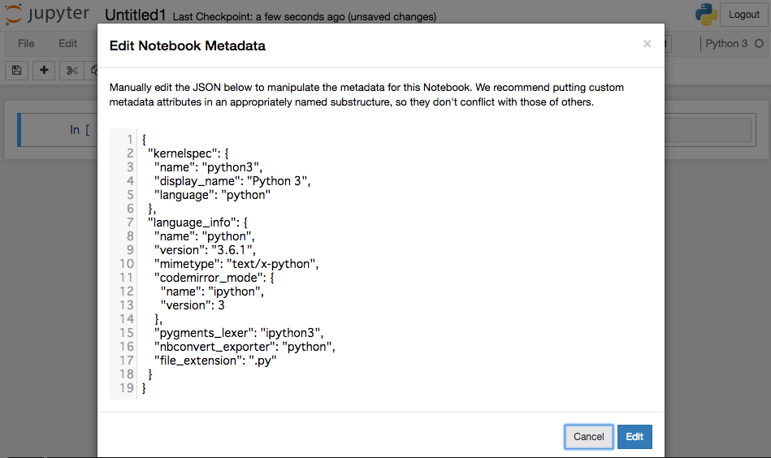

アーティクル
contents ディレクトリの
reStructuredTextファイル
Markdownファイル
HTMLファイル
ipynbファイル
は、アーティクルオブジェクト として読み込まれます。アーティクルオブジェクトはHTMLに変換し、outputs ディレクトリに出力されます。
拡張子が .rst のファイルは、 reStructuredTextパーザ でHTMLに変換されます。
Title of the article
------------------------------
My first article in reStructuredText.
この例のように、文書の先頭にヘッダが記述されていれば、そのヘッダが文書の title プロパティとなります。title プロパティは、article ディレクティブでも指定できます。
Miyadaikuは、rst用の ディレクティブ と ロール を提供しており、文書のプロパティ設定、Jinja2テンプレートの埋め込みなどを行えます。
articleディレクティブは、アーティクルのプロパティを指定します。
.. article::
:date: 2017-01-01
:title: 文書のタイトル
:category: カテゴリ1
:tags: タグ1, タグ2
Sample of article directive
-----------------------------------
This is a miyadaiku article in reST.
この例では、文書のプロパティとして date、title、category、tags を指定しています。
プロパティとして、任意の項目を指定できます。プロパティ設定については、プロパティ を参照してください。
jinja ディレクティブに記述した内容は、Jinja2テンプレートエンジンによってHTMLに変換されます。テンプレートでは、 テンプレート変数 を参照できます。
Properties of this document
-----------------------------------
.. jinja::
<ul>
<li> Category is {{ content.category }} </li>
<li> Tags are {{ ', '.join(content.tags) }} </li>
<li> Date is {{ content.date.strftime('%Y-%m-%d') }} </li>
</ul>
:jinja: ロールで指定した文字列は、Jinja2テンプレートエンジンによってHTMLに変換されます。テンプレートでは、 テンプレート変数 を参照できます。
Link test
-------------
Link to :jinja:`{{ content.link_to("./hello.rst") }}`.
プログラムのソースコードなどは、code-block ディレクティブで記述します。.. code-block:: lang のように言語を指定すると、Pygments による構文ハイライトが行われます。
.. code-block:: python
:caption: sample python code
def test():
pass
HTMLに <div> 要素を埋め込み、リンクのターゲットとして指定できるようにします。<div> 要素の id として、ディレクティブの引数を指定します。
.. target:: id_of_this_section1
Section I
-------------------
Body of section I.
Section II
------------------
Link to :jinja:`{{ content.link_to(content, fragment='id_of_this_section1') }}`.
拡張子が .md のファイルは、 Markdownモジュール でHTMLに変換されます。
デフォルトでは、Markdownモジュールの Extra 拡張 が有効になっています。
また、Miyadaikuは、Markdownモジュールを独自に拡張しており、文書プロパティの指定・Jinja2テンプレートの埋め込みなどを行えます。
文書ファイルの先頭に、プロパティ名とプロパティ値を指定できます。
date: 2017-01-01
title: 文書タイトル
category: カテゴリ1
tags: タグ1, タグ2
# Miyadaiku article
This is a Miyadaiku article in Markdown.
プロパティ値は各行に一つづつ、プロパティ名と値を : で区切って指定します。
プロパティとして、任意の項目を指定できます。プロパティ設定については、プロパティ を参照してください。
Markdownでも、reStructuredTextと同様、:jinja:` Jinja2タグ ` の形式で、Jinja2テンプレートを指定できます。テンプレートでは、 テンプレート変数 を参照できます。
# Link test
Link to :jinja:`{{ content.link_to("./hello.rst") }}`.
.. target:: id_of_div の形式で記述し、HTMLに <div> 要素を埋め込み、リンクのターゲットとして指定できるようにします。次の例では、<div> 要素の id として、id_of_this_section1 を指定します。
.. target:: id_of_this_section1
# Section I
Body of section I.
# Section II
Link to :jinja:`content.link_to(content, fragment='id_of_this_section1')`.
拡張子が .html のファイルは、文書の先頭に文書プロパティを指定したHTMLファイルとして読み込み、Jinja2テンプレートエンジンでHTMLとして出力します。
文書ファイルの先頭に、プロパティ名とプロパティ値を指定できます。
date: 2017-01-01
title: 文書タイトル
category: カテゴリ1
tags: タグ1, タグ2
<p>This is a HTML file</p>
プロパティ値は各行に一つづつ、プロパティ名と値を : で区切って指定します。
プロパティとして、任意の項目を指定できます。プロパティ設定については、プロパティ を参照してください。
HTMLファイルは、Jinja2テンプレートエンジンでHTMLに変換されます。HTMLファイル内では、Jinja2タグを使って テンプレート変数 を参照できます。
<p>Link to <a href='{{ content.link_to("./hello.rst") }}'>hello</a></p>
拡張子が .ipynb のファイルは、Jupyter notebook として読み込まれます。
Jupyter notebook のプロパティは、外部プロパティファイル か、Notebookのメタデータとして指定します。
Jupyter Web画面のメニューで Edit -> Edit Notebook Metadata を選択します。

JSONに miyadaiku キーを追加し、プロパティ値を指定します。次の例では、title プロパティと date プロパティを指定しています。
Sample property of Jupyter notebook:{ "kernelspec": { "name": "python3", "display_name": "Python 3", "": " ommit inrelevant lines" " ... " " ... " "miyadaiku": { "title": "Title of Jupyter notebook", "date": "2017-01-01", } }
reStructuredText/Markdown/HTMLのいずれのアーティクルでも、内部に記述するJinjaテンプレートでは、次の変数を使用できます。
- content
現在のアーティクルの コンテント オブジェクト を参照します。
- page
現在生成しているHTMLファイルの コンテント オブジェクト を参照します。
- contents
プロジェクトの コンテンツ コレクション を参照します。
アーティクルをHTMLに変換する時、通常 Jinja2テンプレートの 変数 content と page はどちらも同じ、現在処理中のアーティクルオブジェクトを参照します。この場合、 content と page が参照しているのは同じオブジェクトです。
しかし、アーティクルが、文章中で別のアーティクルを読み込んでいる場合、読み込まれているアーティクル内のJinja2テンプレートでは、読み込み元のアーティクルは変数 page、読み込まれているアーティクル自身は 変数 content で参照できます。
例えば次のような2つのアーティクル parent.rst と child.rst がある場合
This is parent.rst
page: {{ page.name }}
content: {{ content.name }}
---
{{ content.load('./child.rst').html }}
This is child.rst
page: {{ page.name }}
content: {{ content.name }}
parent.rst をHTMLに変換する際、 {{ content.load('./child.rst').html }} で child.rst が読み込まれます。
この時、parent.rst 内のテンプレートでは、
page は parent.rst オブジェクト
content は parent.rst オブジェクト
child.rst 内のテンプレートでは、
page は parent.rst オブジェクト
content は child.rst オブジェクト
となります。
アーティクルの importsプロパティ に指定したJinja2テンプレートは、自動的に import され、内部のマクロなどを使用できます。
テンプレートのモジュール名は、テンプレートの名の拡張子を除いたファイル名となります。
.. article::
:imports: my_template.html
my_template.html をインポートし、my_macroを呼び出す
{{ my_template.my_macro() }}